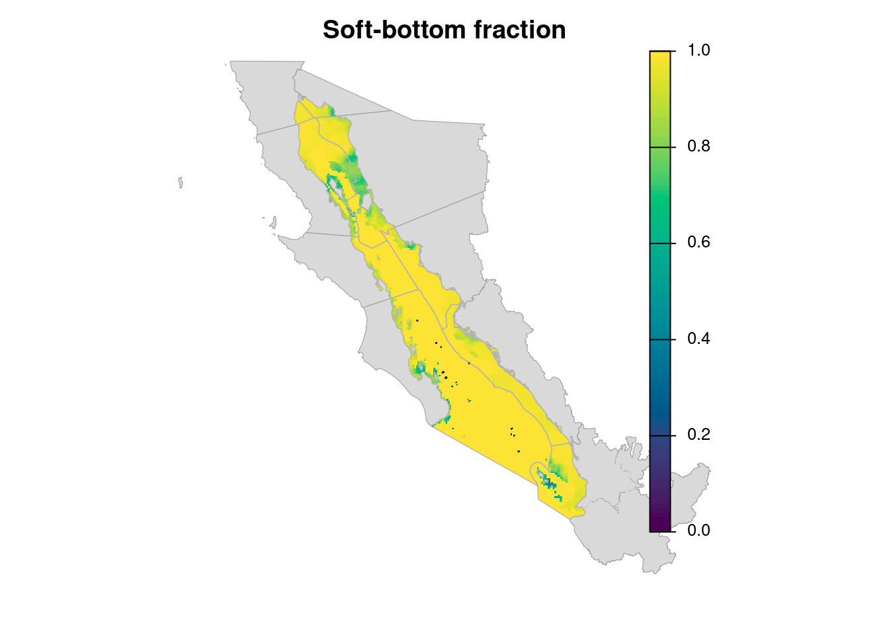
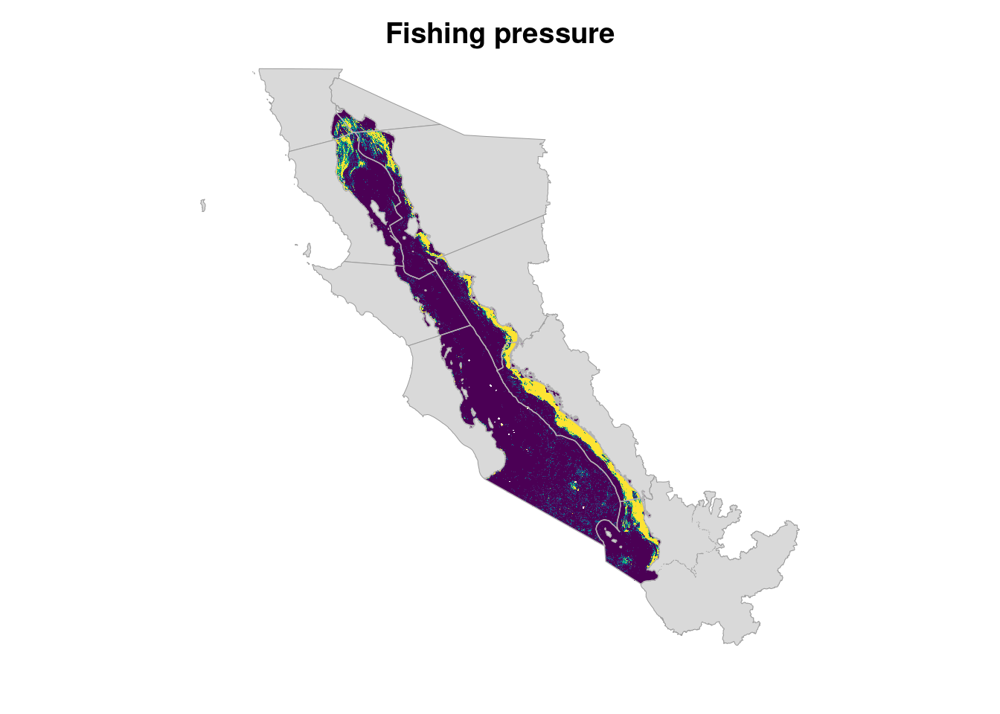
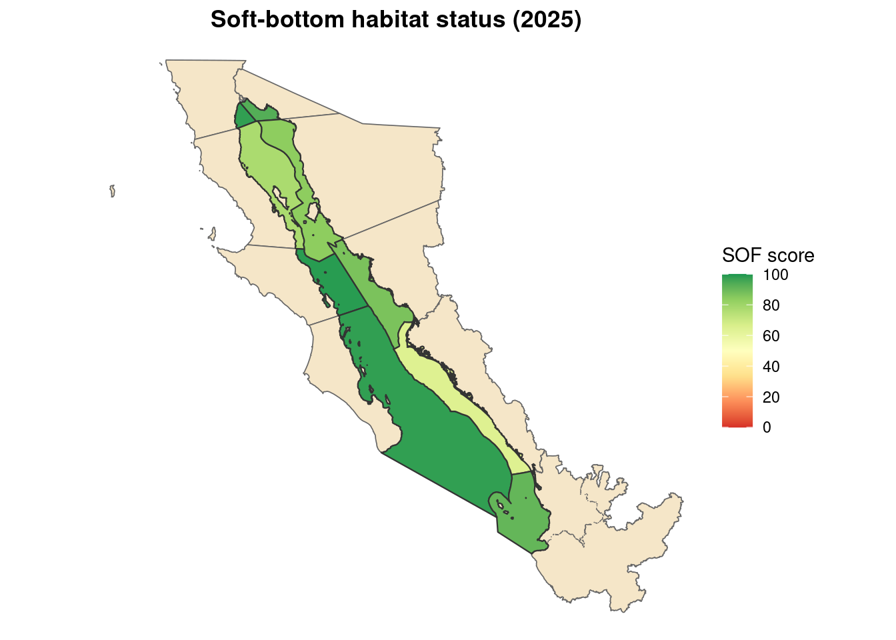
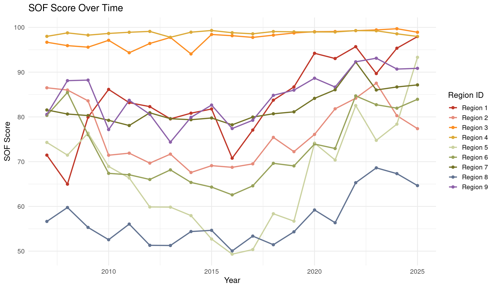
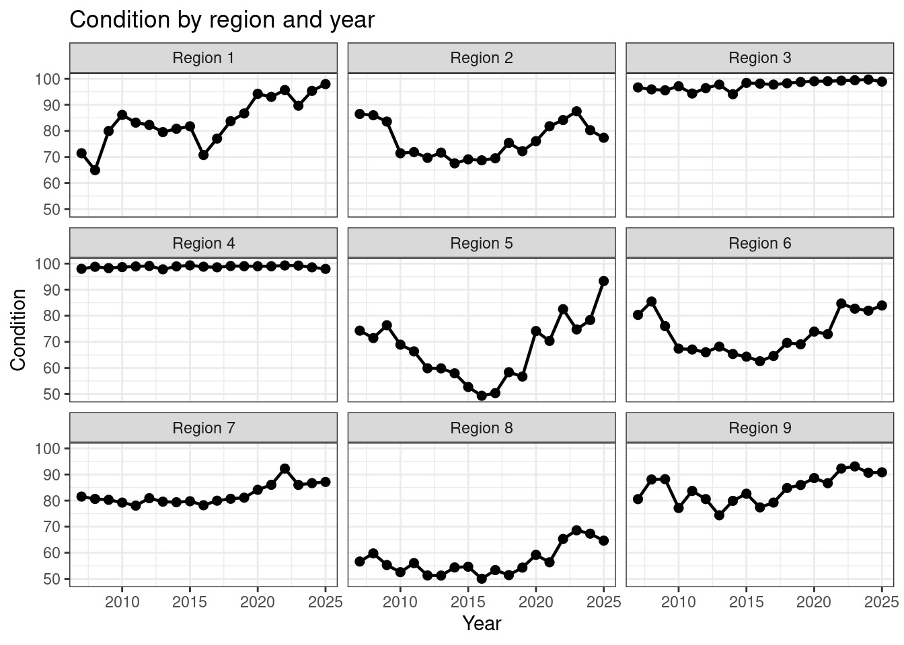

Code
# Load in Libraries
library(sf)
library(dplyr)
library(here)
library(terra)
library(tidyr)
library(ggplot2)
library(knitr)
library(kableExtra)
library(tmap)
library(readr)# Load in Libraries
library(sf)
library(dplyr)
library(here)
library(terra)
library(tidyr)
library(ggplot2)
library(knitr)
library(kableExtra)
library(tmap)
library(readr)# Target CRS for all vector data (matches OHI regions + fishing rasters)
target_crs <- "EPSG:6372" # Mexico ITRF2008 / LCC
# Master analysis grid = fishing effort (already EPSG:6372, 1 km)
years <- 2007:2025
fishing_rasters <- rast(
paste0(
"/home/shares/ohi/OHI_GOC/goal_prep/pressures/vessels/benthic_destructive_fishing/destructive_fishing_hours_",
years,
"_1km.tif"
)
)
nlyr(fishing_rasters)[1] 19# Read OHI regions and transform to Mexico ITRF2008 / LCC before any analysis
ohi_regions <- st_read(here("spatial", "ohi_regions", "goc_ohi_rgns.shp")) |>
st_make_valid() |>
st_transform(target_crs)Reading layer `goc_ohi_rgns' from data source
`/home/frazier/ohi_goc_prep/spatial/ohi_regions/goc_ohi_rgns.shp'
using driver `ESRI Shapefile'
Simple feature collection with 18 features and 5 fields
Geometry type: MULTIPOLYGON
Dimension: XY
Bounding box: xmin: 911292 ymin: 770594.3 xmax: 2550361 ymax: 2349615
Projected CRS: Mexico ITRF2008 / LCCohi_land <- ohi_regions |> dplyr::filter(location == "land")
ohi_marine <- ohi_regions |> dplyr::filter(location == "marine")# Read habitat shapefiles and transform to EPSG:6372 before rasterizing
rocky_reef <- st_read(here("/home/shares/ohi/OHI_GOC/_raw_data/Hem_data/goc_habitat_data/Arrecife rocoso/Arrecife rocoso.shp")) |>
st_make_valid() |>
st_transform(target_crs)Reading layer `Arrecife rocoso' from data source
`/home/shares/ohi/OHI_GOC/_raw_data/Hem_data/goc_habitat_data/Arrecife rocoso/Arrecife rocoso.shp'
using driver `ESRI Shapefile'
Simple feature collection with 4317 features and 3 fields
Geometry type: POLYGON
Dimension: XY
Bounding box: xmin: 122585.9 ymin: 2274841 xmax: 1109257 ymax: 3534794
Projected CRS: WGS 84 / UTM zone 12Nseamounts <- st_read(here("/home/shares/ohi/OHI_GOC/_raw_data/Hem_data/goc_habitat_data/seamount/seamount_merge.shp")) |>
st_make_valid() |>
st_transform(target_crs)Reading layer `seamount_merge' from data source
`/home/shares/ohi/OHI_GOC/_raw_data/Hem_data/goc_habitat_data/seamount/seamount_merge.shp'
using driver `ESRI Shapefile'
Simple feature collection with 52 features and 10 fields
Geometry type: MULTIPOLYGON
Dimension: XY
Bounding box: xmin: 1083733 ymin: 2527774 xmax: 1463499 ymax: 3171542
Projected CRS: Lambert_Conformal_Conic# Clip seamounts to OHI regions (same CRS)
seamounts <- st_intersection(seamounts, ohi_regions)# Find proportion of polygon that is rocky reef (areas in EPSG:6372 meters)
rocky_reef <- rocky_reef |>
mutate(
rocky_km2 = rocky_ha / 100, # Convert rocky_ha from hectares to km2
polygon_km2 = as.numeric(st_area(geometry)) / 1e6, # Find area of polygons
prop_rocky_reef = rocky_km2 / polygon_km2 # Find proportion of polygon that is rocky reef
)# 100 m template nested under the fishing 1 km grid (same CRS, origin, extent)
# so aggregate(fact = 10) lands exactly on the fishing cells
template_100m <- disagg(rast(fishing_rasters[[1]]), fact = 10)# Rasterize rocky reef polygon proportions
rocky_reef_prop_r <- rasterize(vect(rocky_reef), template_100m, field = "prop_rocky_reef", background = 0)# Check to see if the min and max are between 0-1
max(rocky_reef_prop_r)
|---------|---------|---------|---------|
=========================================
class : SpatRaster
size : 14800, 12500, 1 (nrow, ncol, nlyr)
resolution : 100, 100 (x, y)
extent : 1050000, 2300000, 9e+05, 2380000 (xmin, xmax, ymin, ymax)
coord. ref. : Mexico ITRF2008 / LCC (EPSG:6372)
source : spat_6efc59be0b84_454597_o8up7yuDdJ6XHBX.tif
varname : destructive_fishing_hours_2007_1km
name : max
min value : 0.0000000
max value : 0.6724738 # Rasterize the vector seamounts data
seamounts_r <- rasterize(vect(seamounts), template_100m, field = 1, background = 0)
|---------|---------|---------|---------|
=========================================
# Check if values are between 0-1
max(seamounts_r)
|---------|---------|---------|---------|
=========================================
class : SpatRaster
size : 14800, 12500, 1 (nrow, ncol, nlyr)
resolution : 100, 100 (x, y)
extent : 1050000, 2300000, 9e+05, 2380000 (xmin, xmax, ymin, ymax)
coord. ref. : Mexico ITRF2008 / LCC (EPSG:6372)
source : spat_6efc534b45258_454597_80Q6udnsxVen2Mq.tif
varname : destructive_fishing_hours_2007_1km
name : max
min value : 0
max value : 1 # Both layers already rasterized onto template_100m — confirm alignment
compareGeom(rocky_reef_prop_r, template_100m, stopOnError = TRUE)[1] TRUEcompareGeom(seamounts_r, template_100m, stopOnError = TRUE)[1] TRUE# Make raster where 0 = no hard‑bottom and 1+ = hard‑bottom present
hard_bottom_100m <- rocky_reef_prop_r +
seamounts_r
|---------|---------|---------|---------|
=========================================
# Check if values are between 0-1
max(hard_bottom_100m)
|---------|---------|---------|---------|
=========================================
class : SpatRaster
size : 14800, 12500, 1 (nrow, ncol, nlyr)
resolution : 100, 100 (x, y)
extent : 1050000, 2300000, 9e+05, 2380000 (xmin, xmax, ymin, ymax)
coord. ref. : Mexico ITRF2008 / LCC (EPSG:6372)
source : spat_6efc538187f8d_454597_hn1JHs296zpoh7J.tif
varname : destructive_fishing_hours_2007_1km
name : max
min value : 0.000000
max value : 1.534536 # Cap values at 1 to make a proportion
hard_bottom_100m[hard_bottom_100m > 1] <- 1
|---------|---------|---------|---------|
=========================================
|---------|---------|---------|---------|
=========================================
# Groups every 10×10 block of 100‑m cells into one 1‑km cell, and computes the mean of values inside that block
hard_bottom_fraction <- aggregate(hard_bottom_100m, fact = 10, fun = "mean")
|---------|---------|---------|---------|
=========================================
# flips the fraction so more soft bottom = 1
soft_bottom_fraction <- 1 - hard_bottom_fraction# Check if values are between 0-1
max(soft_bottom_fraction)class : SpatRaster
size : 1480, 1250, 1 (nrow, ncol, nlyr)
resolution : 1000, 1000 (x, y)
extent : 1050000, 2300000, 9e+05, 2380000 (xmin, xmax, ymin, ymax)
coord. ref. : Mexico ITRF2008 / LCC (EPSG:6372)
source(s) : memory
name : max
min value : 0
max value : 1 # Mask to the OHI marine region extent
marine_mask <- rasterize(
vect(ohi_marine),
soft_bottom_fraction,
field = 1,
background = NA
)
soft_bottom_fraction <- mask(soft_bottom_fraction, marine_mask)Make plot of soft-bottom area
# Land first (gray), then soft-bottom raster, then marine borders
plot(vect(ohi_land), col = "gray85", border = "gray60", lwd = 0.5,
main = "Soft-bottom fraction", axes = FALSE, box=FALSE)
plot(
soft_bottom_fraction,
add = TRUE,
col = hcl.colors(100, "viridis"),
range = c(0, 1),
legend = TRUE,
axes = FALSE,
box = FALSE
)
plot(vect(ohi_marine), add = TRUE, border = "gray70", lwd = 0.7, col = NA, box=FALSE, axes=FALSE)
soft_res <- res(soft_bottom_fraction)
print(paste("Resolution (m):", soft_res))[1] "Resolution (m): 1000" "Resolution (m): 1000"max(soft_bottom_fraction, na.rm = TRUE)class : SpatRaster
size : 1480, 1250, 1 (nrow, ncol, nlyr)
resolution : 1000, 1000 (x, y)
extent : 1050000, 2300000, 9e+05, 2380000 (xmin, xmax, ymin, ymax)
coord. ref. : Mexico ITRF2008 / LCC (EPSG:6372)
source(s) : memory
name : max
min value : 0
max value : 1 Fishing rasters were loaded above (master grid in EPSG:6372). Soft-bottom habitat was rasterized onto that same nested grid after transforming all shapefiles to Mexico ITRF2008 / LCC.
Average head rope length: 0.030 km Average vessel trawl speed: 3.7 km/h
# Convert fishing hours to area km² of disturbance for each raster cell
# (already on fishing grid; no spatial transform)
disturbance_raster_km2 <- fishing_rasters * 3.7 * 0.030
compareGeom(disturbance_raster_km2, fishing_rasters[[1]], stopOnError = TRUE)[1] TRUEcompareGeom(soft_bottom_fraction, fishing_rasters[[1]], stopOnError = TRUE)[1] TRUEdisturbance_raster_km2 = the area covered by trawlers
# now get pressure
prop_disturbed <- disturbance_raster_km2/soft_bottom_fraction
# Cap pressure at 1 - assumes that going over the same spot multiple times introduces minimal extra impact.
prop_disturbed[prop_disturbed > 1] <- 1
prop_disturbed[is.infinite(prop_disturbed)] <- 0
## save for rhodoliths
# Intermediate: soft-bottom fishing pressure (0–1) for rhodolith use
int_dir <- here("_habitats/HAB_soft_bottom/int")
# One multi-layer GeoTIFF (layers = years 2007–2025)
names(prop_disturbed) <- paste0("prop_disturbed_", years)
writeRaster(
prop_disturbed,
filename = file.path(int_dir, "prop_disturbed_soft_bottom_1km.tif"),
overwrite = TRUE
)
area_soft_bottom_disturbed = prop_disturbed * soft_bottom_fractionMake plot of destructive fishing pressure.
# Land first (gray), then soft-bottom raster, then marine borders
plot(vect(ohi_land), col = "gray85", border = "gray60", lwd = 0.5,
main = "Fishing pressure", axes = FALSE, box=FALSE)
plot(
prop_disturbed,
add = TRUE,
col = hcl.colors(100, "viridis"),
range = c(0, 1),
legend = FALSE,
axes = FALSE,
box = FALSE
)
plot(vect(ohi_marine), add = TRUE, border = "gray70", lwd = 0.7, col = NA, box=FALSE, axes=FALSE)
soft_bottom_fraction = soft bottom area (fraction ≈ km² on 1 km cells)
# Rasterize OHI region IDs onto the fishing grid (vectors already in EPSG:6372)
template <- rasterize(
vect(ohi_marine),
fishing_rasters[[1]],
field = "id",
background = NA
)
compareGeom(template, fishing_rasters[[1]], stopOnError = TRUE)[1] TRUE# Extract region_ids
region_ids <- as.vector(values(template))
# Number of cells in the fishing-aligned region raster
n_cells <- ncell(template)
# Number of years in the disturbance stack
n_years <- nlyr(area_soft_bottom_disturbed)
# Build a tibble where each row = one pixel × one year
df_regions <- tibble(
region_id = rep(region_ids, times = n_years), # Region ID for each pixel, repeated for every year
year = rep(years, each = n_cells), # Year column: each year repeated for all n_cells pixels
disturbed_area = as.vector(values(area_soft_bottom_disturbed)), # Disturbed soft-bottom area (km²) for each pixel × year
soft_bottom_area = rep(as.vector(values(soft_bottom_fraction)), times = n_years) # Soft-bottom area (km²) for each pixel — same every year
)
# Remove rows with missing region IDs or invalid numeric values
df_regions <- df_regions |>
filter(!is.na(region_id), !is.nan(disturbed_area), !is.nan(soft_bottom_area))
df_regions# A tibble: 4,806,282 × 4
region_id year disturbed_area soft_bottom_area
<int> <int> <dbl> <dbl>
1 5 2007 0 0.978
2 5 2007 0 0.978
3 5 2007 0 0.978
4 5 2007 0 0.978
5 5 2007 0 0.978
6 5 2007 0 0.978
7 5 2007 0 0.978
8 5 2007 0 0.978
9 5 2007 0 0.978
10 5 2007 0 0.977
# ℹ 4,806,272 more rows# Calculate Pressure and SOF score for each region for each year
pressure_df <- df_regions |>
group_by(region_id, year) |>
summarise(
disturbed_sum = sum(disturbed_area, na.rm = TRUE),
soft_bottom_sum = sum(soft_bottom_area, na.rm = TRUE),
Pressure = disturbed_sum / soft_bottom_sum,
SOF_score = 1 - Pressure,
Pressure = Pressure * 100,
SOF_score = SOF_score * 100,
.groups = "drop"
)
pressure_df# A tibble: 171 × 6
region_id year disturbed_sum soft_bottom_sum Pressure SOF_score
<int> <int> <dbl> <dbl> <dbl> <dbl>
1 1 2007 674. 2361. 28.5 71.5
2 1 2008 827. 2361. 35.0 65.0
3 1 2009 474. 2361. 20.1 79.9
4 1 2010 327. 2361. 13.9 86.1
5 1 2011 397. 2361. 16.8 83.2
6 1 2012 418. 2361. 17.7 82.3
7 1 2013 483. 2361. 20.4 79.6
8 1 2014 453. 2361. 19.2 80.8
9 1 2015 430. 2361. 18.2 81.8
10 1 2016 690. 2361. 29.2 70.8
# ℹ 161 more rows# SOF score per region per year
write_csv(
pressure_df,
here("_habitats/HAB_soft_bottom/SOF_outputs/sof_region_scores_per_year.csv"))
# pressure_df <- read_csv(here::here("_habitats/HAB_soft_bottom/SOF_outputs/sof_region_scores_per_year.csv"))# Select a single year
year_to_show <- 2025 # <-- change this to any year you want
# Filter for selected year
pressure_year <- pressure_df |>
filter(year == year_to_show) |>
arrange(region_id)
# Make a kable table
pressure_year |>
select(region_id, Pressure, SOF_score) |>
kable(
digits = 4,
col.names = c("Region ID", "Pressure", "SOF_score"),
align = c("c", "r", "r")
) |>
kable_styling(
bootstrap_options = c("striped", "bordered", "hover"),
full_width = FALSE
) |>
add_header_above(
setNames(3, paste0("Soft-bottom Pressure & SOF — Year ", year_to_show))
)| Region ID | Pressure | SOF_score |
|---|---|---|
| 1 | 2.0494 | 97.9506 |
| 2 | 22.6262 | 77.3738 |
| 3 | 1.0847 | 98.9153 |
| 4 | 2.0245 | 97.9755 |
| 5 | 6.6870 | 93.3130 |
| 6 | 16.0697 | 83.9303 |
| 7 | 12.8498 | 87.1502 |
| 8 | 35.3510 | 64.6490 |
| 9 | 9.1496 | 90.8504 |
# ohi_regions already in EPSG:6372 from earlier
ohi_sof <- ohi_regions |>
left_join(
pressure_year |> transmute(id = as.integer(region_id), SOF_score),
by = "id"
)
ohi_land <- ohi_sof |> filter(location == "land")
ohi_marine <- ohi_sof |> filter(location == "marine")
ggplot() +
geom_sf(data = ohi_land, fill = "#f5e6c8", color = "gray40", linewidth = 0.3) +
geom_sf(data = ohi_marine, aes(fill = SOF_score), color = "gray20", linewidth = 0.4) +
scale_fill_distiller(
palette = "RdYlGn",
direction = 1,
name = "SOF score",
limits = c(0, 100),
breaks = seq(0, 100, by = 20)
) +
labs(title = "Soft-bottom habitat status (2025)") +
theme_void() +
theme(
legend.position = "right",
plot.title = element_text(face = "bold", hjust = 0.5)
)
# Define region colors
rgn_colors <- c(
"Region_1" = "#C03729",
"Region_2" = "#E68C7C",
"Region_3" = "#FC8F24",
"Region_4" = "#dcaa38",
"Region_5" = "#cbd2a0",
"Region_6" = "#98a25a",
"Region_7" = "#747428",
"Region_8" = "#627391",
"Region_9" = "#8d61a9"
)
# Clean region names in pressure_df to match color names
pressure_df <- pressure_df |>
mutate(
region_clean = paste0("Region_", region_id), # numeric → Region_#
region_clean = gsub("_", " ", region_clean) # Region_1 → Region 1
)
# Clean color names to match cleaned labels ("Region 1", etc.)
rgn_colors_clean <- setNames(
rgn_colors,
gsub("_", " ", names(rgn_colors)) # Region_1 → Region 1
)
# SOF time series plot with custom colors
ggplot(
pressure_df,
aes(
x = year,
y = SOF_score,
group = region_clean,
color = region_clean
)
) +
geom_point(size = 2) +
geom_line(linewidth = 1) +
scale_color_manual(values = rgn_colors_clean) +
labs(
title = "SOF Score Over Time",
x = "Year",
y = "SOF Score",
color = "Region ID"
) +
theme_minimal(base_size = 14)
# Calculate condition score
condition_df <- pressure_df |>
select(region_id, year, condition = SOF_score) |> # keep needed columns
mutate(
condition = pmin(condition, 100) # cap at 100
)
condition_df# A tibble: 171 × 3
region_id year condition
<int> <int> <dbl>
1 1 2007 71.5
2 1 2008 65.0
3 1 2009 79.9
4 1 2010 86.1
5 1 2011 83.2
6 1 2012 82.3
7 1 2013 79.6
8 1 2014 80.8
9 1 2015 81.8
10 1 2016 70.8
# ℹ 161 more rowswrite_csv(condition_df, here::here("_habitats/HAB_soft_bottom/SOF_outputs/sof_status.csv"))
condition_df <- condition_df |>
mutate(region_id = factor(region_id, levels = 1:9))
ggplot(condition_df, aes(x = year, y = condition)) +
geom_line(linewidth = 0.8) +
geom_point(size = 2) +
facet_wrap(~ region_id, ncol = 3, labeller = labeller(region_id = function(x) paste("Region", x))) +
scale_x_continuous(breaks = pretty(condition_df$year)) +
labs(
x = "Year",
y = "Condition",
title = "Condition by region and year"
) +
theme_bw()
# Trend Calculation: lm for most recent 5 years of data
year_end <- max(condition_df$year, na.rm = TRUE)
year_start <- year_end - 4
calc_trends <- function(d) {
ys <- min(d$year)
ye <- max(d$year)
cs <- d$condition[d$year == ys][1]
fit_lin <- lm(condition ~ year, data = d)
fit_log <- lm(log(condition) ~ year, data = d)
slope_lin <- unname(coef(fit_lin)["year"])
slope_log <- unname(coef(fit_log)["year"])
tibble(
year = ye,
year_start = ys,
year_end = ye,
condition_start = cs,
trend_pct_linear = (slope_lin / cs) * 100, # slope / start * 100
trend_pct_cagr = (exp(slope_log) - 1) * 100 # slope from log model
)
}
trend_df <- condition_df |>
filter(year >= year_start, year <= year_end) |>
group_by(region_id) |>
group_modify(~ calc_trends(.x)) |>
ungroup()
trend_df# A tibble: 9 × 7
region_id year year_start year_end condition_start trend_pct_linear
<fct> <int> <int> <int> <dbl> <dbl>
1 1 2025 2021 2025 93.0 1.02
2 2 2025 2021 2025 81.8 -1.56
3 3 2025 2021 2025 99.1 0.0105
4 4 2025 2021 2025 99.0 -0.275
5 5 2025 2021 2025 70.4 5.93
6 6 2025 2021 2025 72.9 2.64
7 7 2025 2021 2025 86.1 -0.396
8 8 2025 2021 2025 56.4 3.30
9 9 2025 2021 2025 86.7 0.777
# ℹ 1 more variable: trend_pct_cagr <dbl>write_csv(trend_df, here::here("_habitats/HAB_soft_bottom/SOF_outputs/sof_trend.csv"))pressure_df_score <- pressure_df %>%
mutate(pressure = Pressure/100) %>%
select(region_id, year, pressure)
write_csv(pressure_df_score, here::here("_habitats/HAB_soft_bottom/SOF_outputs/sof_pressure.csv"))